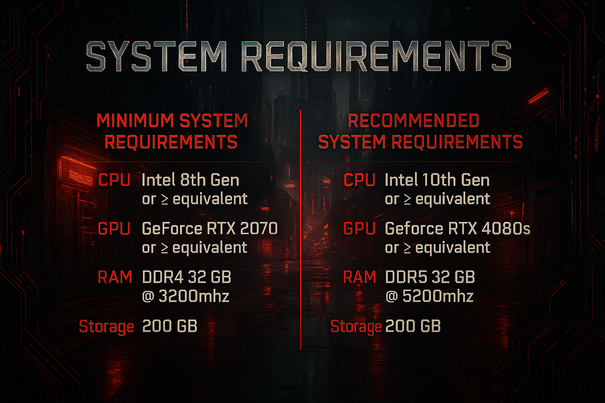

Read first: Chrome & Blood requires the Phantom Liberty DLC and an official copy of Cyberpunk 2077, updated to the latest version on Steam. An SSD is required — do not try to run this on an HDD. Only Windows 10/11 is supported.
System Requirements
Based on internal testing and community feedback. Your mileage will vary depending on hardware, background programs, and drivers.

Before You Start
Instructions assume the Steam version of the game.
- Perform a clean install of Cyberpunk 2077
Install it outside of
Program Files. - Install the Visual C++ Redistributables (All-in-One)
Extract and run
install_all.bat. - Disable Steam auto-updates
- Right-click Cyberpunk 2077 in your Steam Library → Properties
- Go to the Updates tab
- Set Automatic Updates to "Only update this game when I launch it"
- From now on, only launch the game through Mod Organizer 2
- Make sure all official DLC is installed
- Install REDmod
It's a free DLC on Steam — Steam must show both Cyberpunk 2077: REDmod and Cyberpunk 2077: Phantom Liberty as installed.
- Update your GPU drivers
- Install the .NET Runtime (latest version)
- Install the DirectX End-User Runtime
Install via Wabbajack
You can install Chrome & Blood from Nexus Mods or from the Wabbajack Gallery.
- Download Wabbajack
Put it somewhere safe — not inside your Cyberpunk folder and not in a protected location like Program Files. Example:
D:\Wabbajack - Launch Wabbajack and go to Browse Modlists
- Filter by Cyberpunk 2077 and tick Featured
- Search for "Chrome & Blood" if it doesn't show up right away
- Click the cover art, then download and install
- Set your paths
- Installation:
D:\Wabbajack\Chrome & Blood - Downloads:
D:\Wabbajack\downloads— a shared downloads folder lets different Wabbajack lists reuse the same archives - Both folders need to be on the same drive as your Cyberpunk install, and not inside the game directory or Program Files
- Installation:
- Hit Install and let Wabbajack do its thing
- Open the install folder and launch
ModOrganizer.exe - Pick your profile — Immersive or Standard — then hit Run
Post-Installation
Antivirus warning: third-party antivirus software (especially BitDefender, Norton, and Webroot) will cause problems with MO2's Virtual File System. You may need to fully remove it for this list to work. Windows Defender with smart browsing habits is enough.
Also disable all overlays — Steam overlay, Discord overlay, GPU software overlays, Xbox Game Bar.
How to add a Windows Defender exclusion
- Open Windows Security
- Go to Virus & threat protection
- Click Manage settings
- Scroll to Exclusions → Add or remove exclusions
- Add your Chrome & Blood installation folder
- (Optional) Also exclude
ModOrganizer.exeandCyberpunk2077.exe
Updating the Modlist
- Download the latest
.wabbajackfileOr find the updated listing in the Wabbajack gallery.
- Follow the installation steps above starting from step 2
- Check the
Overwritebox before installing so updated files get replaced properly
Back up first: saves and personal settings live in your profile folder. The FAQ covers exactly what to back up before an update, and how to keep your own added mods safe with the [NoDelete] tag.
Keybinds to Know
Some of these can be changed in-game or through the Redscript and CET Mod Settings menus. The Cyber Engine Tweaks overlay bind is set by you on first launch.
| Key | Action | Mod |
|---|---|---|
| 1 – 0 | Quickhack hotkeys — assign quickhacks to keys for instant casting without the scanner | Quickhack Hotkeys |
| O | Immersive timeskip menu | Immersive Timeskip |
| L-Shift / Space | Nitrous boost (cars / bikes) | Nitrous |
| Hold Shift + ADS | Variable zoom on supported scopes | Zoomable Scopes |
| DPad-L Hold / Mouse 5 | Toggle flashlight | Simple Flashlight |
| F3 | Night vision (requires Kiroshi Optics) | Kiroshi Optics Night Vision |
| T | Cycle firing modes (single / burst / auto) | Trigger Mode Control |
Check each mod's page for additional keybind options.